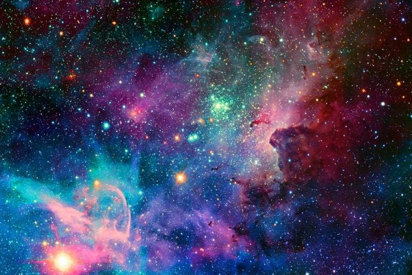
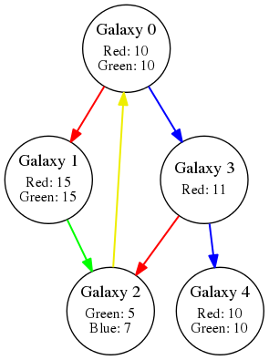

Challenge 11 - Colors

You are a conscious sphere of energy. You live in an abstract, colorful world, formed by clumps of energy vibrating at different frequencies and other beings like you. Your kind can absorb residual energy from the environment, which makes them change color. For example, if you are Red and you absorb Blue energy you would become Purple. Note that if you are Purple and you absorb Blue again, nothing would happen: you already have Blue energy in you. In the beginning your energy is neutral (transparent, if you like). What's more, while some color combinations may not have names, they are still possible (for example, Purple + Green).
Your world began in a similar way to the human one: at first, all the energy was concentrated together in a single point, but now it has all expanded and drifted away, with gravity clustering everything into groups. We call each of these groups a Galaxy. The distance between galaxies is unbelievably long but, thankfully for you, some of them are connected by wormholes. A wormhole functions as a tunnel, transporting you instantly from one side to the other. The wormholes in your universe are very special:
- They are unidirectional.
- They absorb energy too, but only those of certain specific frequencies. A Red wormhole, for example, absorbs Red energy.
- You need to have the same color energy as the wormhole in order to go through it.
This may seem complicated but, it's actually really simple: if you are Purple and you go through a Blue wormhole, you will become Red. After that you cannot go through a Blue wormhole as you don't have Blue energy, unless you absorb Blue energy again. Galaxies are very different from each other and some have colored environmental energy floating around, but the problem is that it takes a considerable amount of time to gather enough of it to change your color.
You have been in Galaxy 0 your entire existence and you are growing a bit bored, so you have decided that it's time for you to do some traveling. You want to know the fastest way to reach each Galaxy in order to decide your travel destination. The time to reach Galaxy 0 is always 0 (you are already there!)
Input
The first line will contain an integer C, the number of cases for our problem.
Each case starts with a line with one integer K, the number of colors. A set of K lines follows, each describing a color. The description of a color consists of a string N (the name of the color) and an integer M, followed by M strings. This means that the color N is composed of a mix of the M colors. Primary colors have M = 0.
Next comes a line with an integer G, the number of Galaxies. G galaxies descriptions follow. Each description starts with a line with an integer E, the number of different energies present in that galaxy. A set of E lines follows, each with a string X and an integer T, indicating that the energy of color X takes T seconds to gather.
A line with an integer W, the number of wormholes, follows. A set of W lines follows, each describing a wormhole. The description of a wormhole consists of a string H, the color of the wormhole, and two integers A and B, indicating that the wormhole goes from Galaxy A to Galaxy B.
Output
For each case, a line starting with "Case #x: " followed by the sequence of G space-separated integers, indicating the minimum time to reach each Galaxy. If it's not possible to reach a galaxy, print -1 instead.
Example
4 Red 0 Green 0 Blue 0 Yellow 2 Red Green 5 2 Red 10 Green 10 2 Red 15 Green 15 2 Blue 7 Green 5 1 Red 11 2 Red 10 Green 10 6 Red 0 1 Red 3 2 Green 1 2 Blue 0 3 Blue 3 4 Yellow 2 0 |
It might help to have a visual representation of the case too:
The minimum time to reach Galaxy 0 is 0.
The minimum time to reach Galaxy 1 is 10: From 0, gather Red energy and go to 1.
The minimum time to reach Galaxy 2 is 20: From 0, gather Red and Green energy. Go to 1 and then to 2.
The minimum time to reach Galaxy 3 is 47: From 0, gather Red and Green energy. Go to 1 and gather Red energy again. Go to 2 and gather Green and Blue energy. Go back to 0, and then go to 3.
You cannot reach Galaxy 4.
Limits
- 1 ≤ G ≤ 500
- 1 ≤ Primary colors ≤ 10
- 1 ≤ W ≤ 10000
Sample Input
1 4 Red 0 Green 0 Blue 0 Yellow 2 Red Green 5 2 Red 10 Green 10 2 Red 15 Green 15 2 Blue 7 Green 5 1 Red 11 2 Red 10 Green 10 6 Red 0 1 Red 3 2 Green 1 2 Blue 0 3 Blue 3 4 Yellow 2 0
Sample Output
Case #1: 0 10 20 47 -1